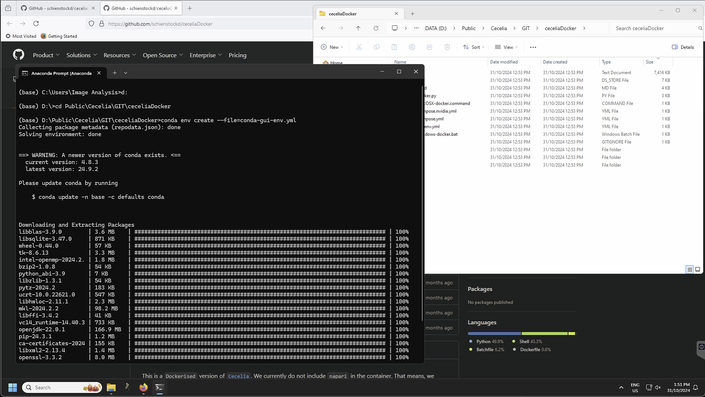
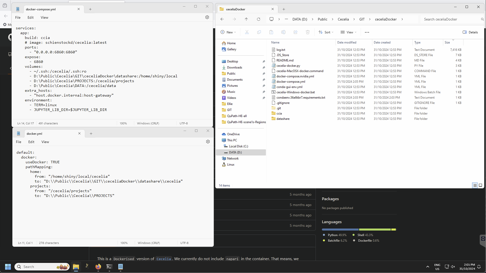
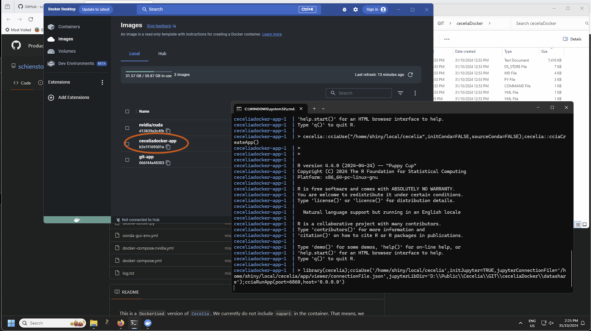
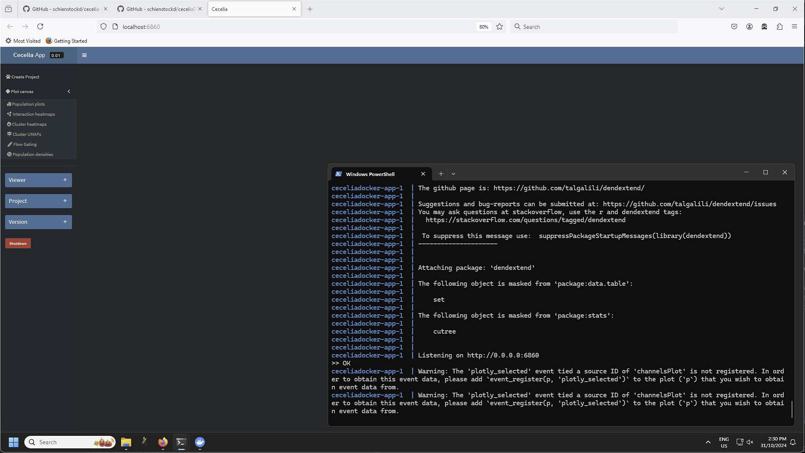
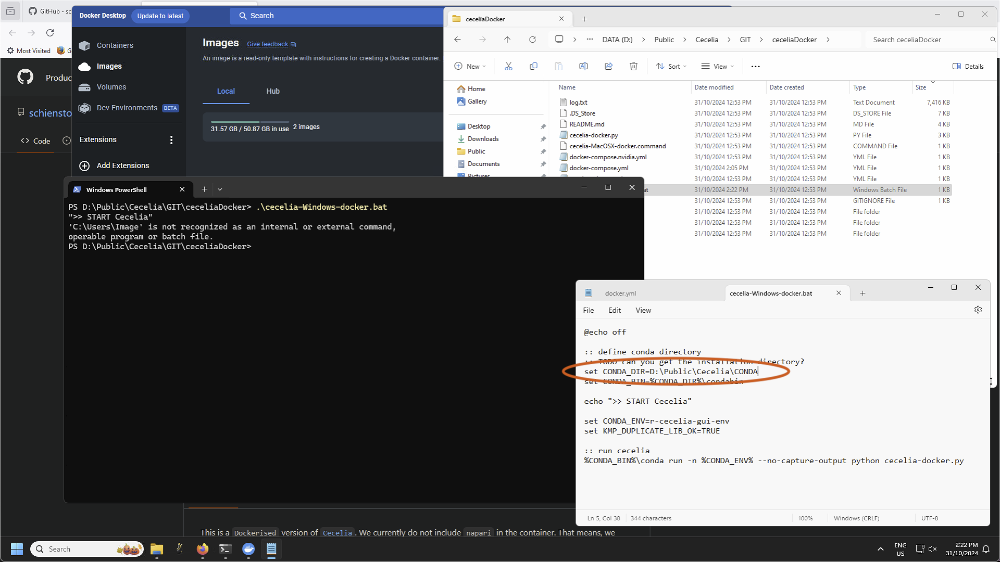

Windows/Docker installation#
Step by step guide#
Install the latest Docker version.
Tip
For Windows, Docker uses WSL 2 (Windows Subsystem for Linux). By default all containers will be stored on C: drive. If you do not want to use this location, you must execute the following commands in Command prompt as outlined in this Stack Overflow post to change the location:
Make sure that Docker Desktop is shut down.
Check WSL state#wsl --list -vMake sure the services are STOPPED#NAME STATE VERSION * docker-desktop Stopped 2 docker-desktop-data Stopped 2Export docker-desktop-data to a file.
Export Docker Desktop data#wsl --export docker-desktop-data "D:\Docker\wsl\data\docker-desktop-data.tar"Unregister docker-desktop-data.
Unregister Docker Desktop data#wsl --unregister docker-desktop-dataImport the data into a new location where your Docker containers will be stored. You must create the new location first before submitting this command.
Import Docker Desktop data into new location#wsl --import docker-desktop-data "D:\Docker\wsl\data" "D:\Docker\wsl\data\docker-desktop-data.tar" --version 2After this you can start Docker Desktop and all containers should now be saved in the new location. You can now delete the .tar file.
Attention
For Windows, you need either at least Windows 11 or at least the 19044.1200 (21H2) Windows 10 Insider Preview Build for GPU support. You can sign up here for the Windows insider program.
Install the latest Miniconda version.
Retrieve the CeceliaDocker project. Either Download and unpack or clone the CeceliaDocker repository into a directory of your choice. In this tutorial we are using `D:PublicCeceliaGIT`.
{kind=link}
4. Create conda environment for napari to run. On Windows, you might want to use Anaconda Prompt to initialise the conda toolkit. Anaconda Prompt has to be used only to initialise the conda environment. It is not needed after this step is done.
Create conda environment#conda env create --file=conda-gui-env.ymlAttention
On Windows, if the conda environment fails to build due to missing compiler wou might need to install Microsoft Visual C++ >= 14.0 with Microsoft C++ Build Tools.
{kind=link}
Adjust config files
You must adjust the filepaths in the config files docker-compose.yml and datashare/docker.yml located in `D:PublicCeceliaGITceceliaDocker`. This will tell Docker where your projects are stored and the data location that you can use to import data.
Windows example docker-compose.yml#services: app: volumes: - D:\Public\Cecelia\GIT\ceceliaDocker\datashare:/home/shiny/local - D:\Public\Cecelia\PROJECTS:/cecelia/projects - D:\Public\Cecelia\DATA:/cecelia/dataWe must also tell Shiny to use the host directory to open images as they are opened outside of the container within the napari environment.
Windows example datashare/docker.yml#default: docker: useDocker: TRUE pathMapping: home: from: "/home/shiny/local/cecelia" to: "D:\\Public\\Cecelia\\GIT\\ceceliaDocker\\datashare\\cecelia" projects: from: "/cecelia/projects" to: "D:\\Public\\Cecelia\\PROJECTS"
{kind=link}
Start Docker Desktop and retrieve Cecelia container.
Run (or build) the Docker container with cecelia-MacOSX-docker.command (Mac) or cecelia-Windows-docker.bat (Windows) located in `D:PublicCeceliaGITceceliaDocker`. This will start the local napari environment, retrieve the Docker container during the first run and start the app.
 Attention
If you installed Miniconda in a custom location, ie/ not your user account, you must specify that directory in the .command or .bat file by editing the file in a Text editor.

{kind=link}
{kind=link}
{kind=link}